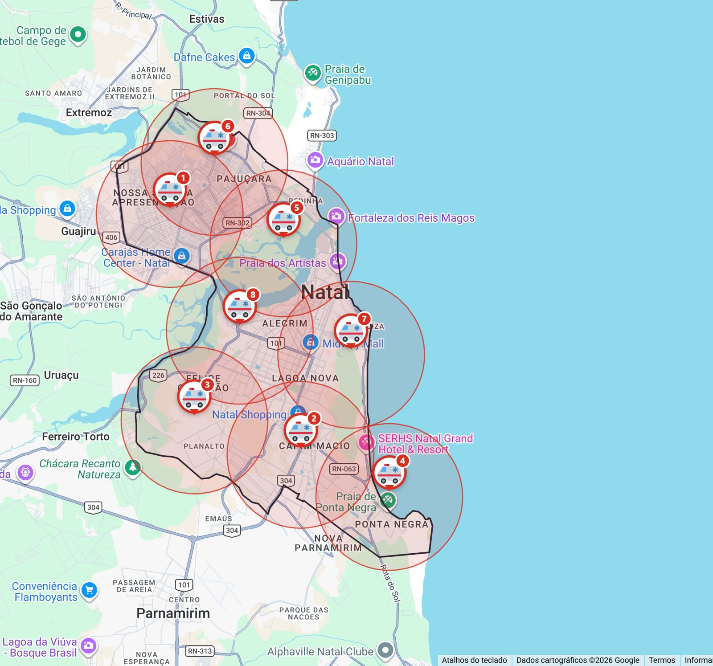
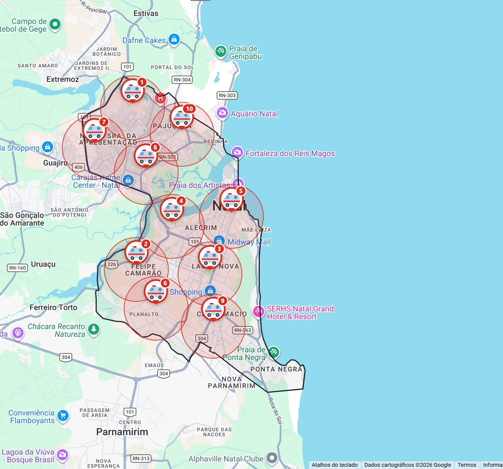
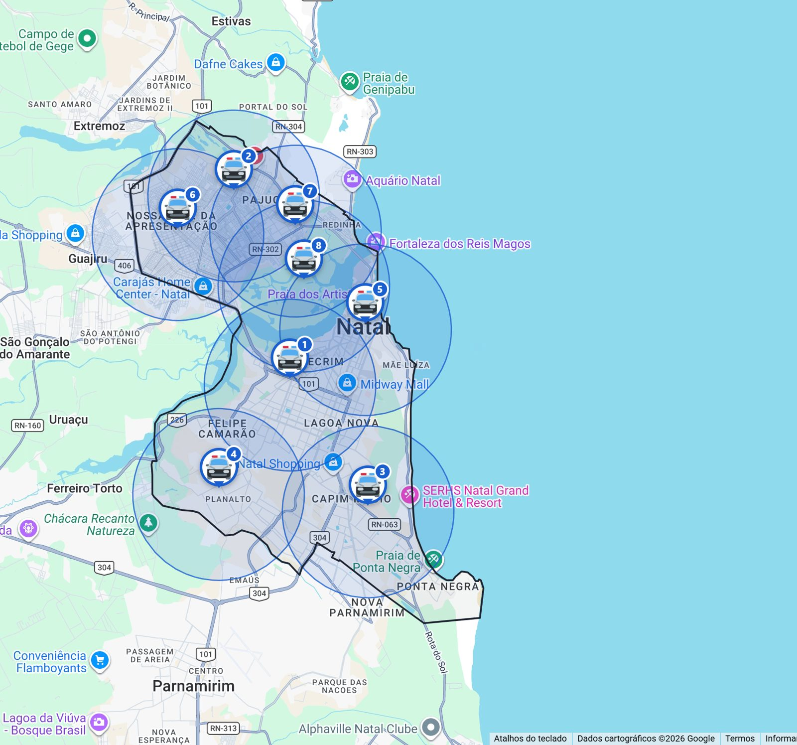
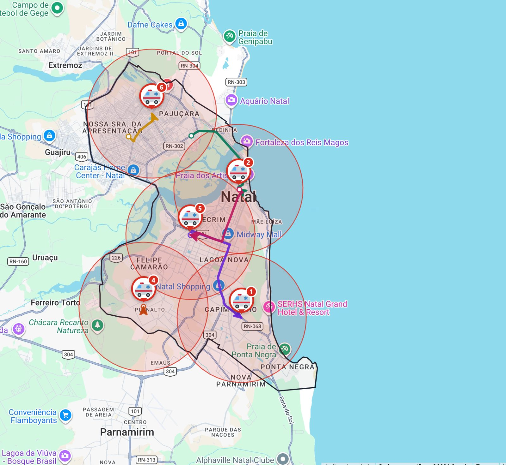
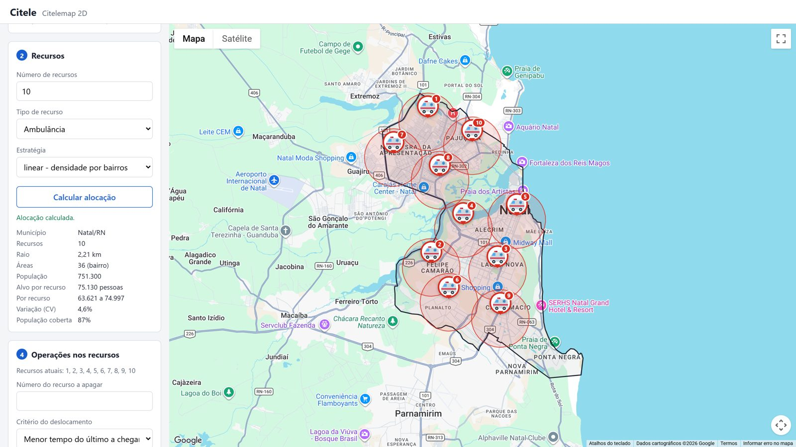
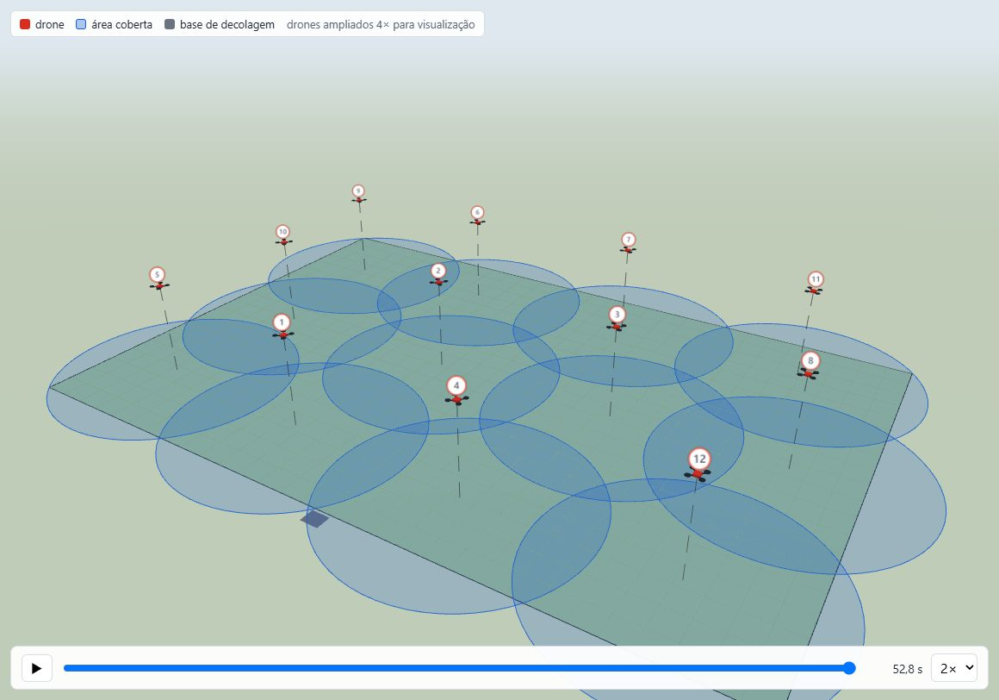

<title>Citele</title>
<meta name="description" content="Citele: apoio à decisão para posicionar ambulâncias, viaturas e drones no território, com dados oficiais.">
<link rel="preconnect" href="https://fonts.googleapis.com">
<link rel="preconnect" href="https://fonts.gstatic.com" crossorigin>
<link rel="stylesheet" href="https://fonts.googleapis.com/css2?family=Archivo:wdth,wght@100..125,500..800&family=Public+Sans:ital,wght@0,400;0,500;0,600;1,400&family=IBM+Plex+Mono:wght@400;500&display=swap">
<style>
  /* Layout: prancha cartografica. Faixas de largura total, cada secao com
     "regua" de coordenadas na margem; a abertura desenha Natal com os
     circulos de cobertura calculados pelo proprio sistema. */
  :root {
    --papel: #F3F6FA;      /* fundo, cinza-azulado frio */
    --folha: #FFFFFF;      /* superficies */
    --tinta: #13254A;      /* texto e titulos (azul-marinho da marca) */
    --suave: #56627A;      /* texto secundario */
    --grade: #D5DDE8;      /* linhas de grade e bordas */
    --azul: #1A5FD0;       /* acao, cobertura */
    --sinal: #D92D20;      /* o recurso (ponto vermelho do simbolo) */
    --cobertura: rgb(26 95 208 / 0.14);
    --faixa: #13254A;      /* faixa escura (fundo da secao de modulos) */
    --faixa-texto: #E8EEF8;
    --faixa-suave: #A9B8D3;
    --fonte-titulo: "Archivo", "Arial Narrow", system-ui, sans-serif;
    --fonte-texto: "Public Sans", "Segoe UI", system-ui, sans-serif;
    --fonte-dado: "IBM Plex Mono", ui-monospace, "Cascadia Mono", Consolas, monospace;
    --largura: 72rem;
  }
  @media (prefers-color-scheme: dark) {
    :root:not([data-theme="light"]) {
      --papel: #0D1526; --folha: #131E35; --tinta: #E6ECF5; --suave: #9AA8C0; --grade: #26344F;
      --azul: #6F9BEF; --sinal: #F0614F; --cobertura: rgb(111 155 239 / 0.16);
      --faixa: #080F1E; --faixa-texto: #E6ECF5; --faixa-suave: #93A3C2; color-scheme: dark;
    }
  }
  :root[data-theme="dark"] {
    --papel: #0D1526; --folha: #131E35; --tinta: #E6ECF5; --suave: #9AA8C0; --grade: #26344F;
    --azul: #6F9BEF; --sinal: #F0614F; --cobertura: rgb(111 155 239 / 0.16);
    --faixa: #080F1E; --faixa-texto: #E6ECF5; --faixa-suave: #93A3C2; color-scheme: dark;
  }

  * { box-sizing: border-box; }
  body { background: var(--papel); color: var(--tinta); font-family: var(--fonte-texto); font-size: 1.0625rem;
    line-height: 1.6; -webkit-font-smoothing: antialiased; }
  h1, h2, h3 { font-family: var(--fonte-titulo); line-height: 1.08; margin: 0; text-wrap: balance; letter-spacing: -0.01em; }
  h1 { font-size: clamp(2.3rem, 5.2vw, 4.1rem); font-weight: 800; font-stretch: 112%; }
  h2 { font-size: clamp(1.75rem, 3.4vw, 2.6rem); font-weight: 750; font-stretch: 110%; }
  h3 { font-size: 1.3rem; font-weight: 700; font-stretch: 105%; }
  p { margin: 0; max-width: 65ch; }
  a { color: var(--azul); }
  a:focus-visible, button:focus-visible { outline: 3px solid var(--azul); outline-offset: 3px; border-radius: 4px; }
  img { display: block; max-width: 100%; height: auto; }
  .dado { font-family: var(--fonte-dado); font-variant-numeric: tabular-nums; }
  .rotulo { font-family: var(--fonte-dado); font-size: 0.75rem; letter-spacing: 0.12em; text-transform: uppercase;
    color: var(--azul); }

  .faixa { padding-left: max(16px, env(safe-area-inset-left, 0px)); padding-right: max(16px, env(safe-area-inset-right, 0px)); }
  .conteudo { max-width: var(--largura); margin: 0 auto; }
  section.faixa { padding-block: clamp(3.5rem, 8vw, 6.5rem); }
  .cabeca { display: grid; gap: 0.9rem; margin-bottom: clamp(2rem, 4vw, 3rem); }
  .cabeca p { color: var(--suave); }

  /* Barra superior */
  body::before { content: ""; position: fixed; inset: 0 0 auto; height: env(safe-area-inset-top, 0px); z-index: 10;
    background: var(--papel); }
  .topo { position: sticky; top: env(safe-area-inset-top, 0px); z-index: 5; background: color-mix(in srgb, var(--papel) 92%, transparent);
    backdrop-filter: blur(8px); border-bottom: 1px solid var(--grade); padding-block: 0.7rem; }
  .topo .conteudo { display: flex; align-items: center; justify-content: space-between; gap: 1rem; }
  .marca { display: flex; align-items: center; gap: 0.55rem; text-decoration: none; color: var(--tinta);
    font-family: var(--fonte-titulo); font-weight: 800; font-size: 1.35rem; font-stretch: 112%; }
  .marca img { width: 30px; height: 30px; }
  .topo nav { display: flex; gap: 1.4rem; font-size: 0.92rem; }
  .topo nav a { color: var(--suave); text-decoration: none; }
  .topo nav a:hover { color: var(--tinta); }

  /* Abertura */
  .abertura { padding-block: clamp(2.5rem, 6vw, 4.5rem) clamp(3rem, 6vw, 5rem); }
  .abertura .conteudo { display: grid; grid-template-columns: minmax(0, 1.05fr) minmax(0, 1fr); gap: clamp(2rem, 5vw, 4rem);
    align-items: center; }
  .abertura .texto { display: grid; gap: 1.4rem; min-width: 0; }
  .abertura h1 em { font-style: normal; color: var(--sinal); }
  .abertura .lead { font-size: 1.2rem; color: var(--suave); }
  .acoes { display: flex; gap: 0.8rem; flex-wrap: wrap; }
  .botao { display: inline-flex; align-items: center; gap: 0.5rem; padding: 0.8rem 1.25rem; border-radius: 6px;
    font-weight: 600; text-decoration: none; border: 1.5px solid var(--azul); }
  .botao.cheio { background: var(--azul); color: var(--folha); }
  .botao.vazado { color: var(--azul); }
  .prancha { position: relative; background: var(--folha); border: 1px solid var(--grade); border-radius: 10px;
    padding: 1rem 1rem 0.8rem; min-width: 0; }
  .prancha canvas { width: 100%; aspect-ratio: 1 / 1.02; display: block; }
  .prancha figcaption { display: flex; justify-content: space-between; gap: 1rem; flex-wrap: wrap; font-size: 0.78rem;
    color: var(--suave); border-top: 1px dashed var(--grade); padding-top: 0.6rem; margin-top: 0.4rem; }
  .numeros-abertura { display: grid; grid-template-columns: repeat(3, minmax(0, 1fr)); gap: 1.25rem; padding-top: 0.4rem; }
  .numeros-abertura div { display: grid; }
  .numeros-abertura b { font-family: var(--fonte-dado); font-size: 1.5rem; font-weight: 500; color: var(--tinta); }
  .numeros-abertura span { font-size: 0.85rem; color: var(--suave); }

  /* Problema */
  .problema .lista { display: grid; grid-template-columns: repeat(3, minmax(0, 1fr)); gap: clamp(1.5rem, 3vw, 2.5rem); }
  .problema .lista div { display: grid; gap: 0.5rem; align-content: start; border-top: 2px solid var(--tinta); padding-top: 1rem; }
  .problema .lista p { color: var(--suave); font-size: 1rem; }

  /* Modulos (faixa escura) */
  .modulos { background: var(--faixa); color: var(--faixa-texto); }
  .modulos .cabeca p { color: var(--faixa-suave); }
  .modulos .rotulo { color: #8DB0F5; }
  .fluxo { display: grid; grid-template-columns: repeat(3, minmax(0, 1fr)); gap: 1.25rem; }
  .modulo { display: grid; gap: 0.8rem; align-content: start; padding: 1.6rem; border: 1px solid rgb(255 255 255 / 0.14);
    border-radius: 10px; background: rgb(255 255 255 / 0.04); }
  .modulo .tipo { font-family: var(--fonte-dado); font-size: 0.75rem; color: var(--faixa-suave); }
  .modulo p { color: var(--faixa-suave); font-size: 0.98rem; }
  .modulo ul { margin: 0; padding-left: 1.1rem; color: var(--faixa-texto); font-size: 0.95rem; display: grid; gap: 0.25rem; }
  .modulo a { color: #8DB0F5; font-weight: 600; text-decoration: none; }
  .modulo a:hover { text-decoration: underline; }
  .ligacao { margin-top: 1.5rem; font-family: var(--fonte-dado); font-size: 0.85rem; color: var(--faixa-suave);
    display: flex; gap: 0.6rem; flex-wrap: wrap; align-items: center; }
  .ligacao b { color: var(--faixa-texto); font-weight: 500; }

  /* Citelemap: estrategias */
  .estrategias { display: grid; grid-template-columns: repeat(2, minmax(0, 1fr)); gap: clamp(1.5rem, 3vw, 2.5rem); }
  .estrategia { display: grid; grid-template-columns: minmax(0, 0.95fr) minmax(0, 1fr); gap: 1.2rem; align-items: start; }
  .estrategia img { border-radius: 8px; border: 1px solid var(--grade); aspect-ratio: 1 / 1; object-fit: cover; width: 100%; }
  .estrategia .info { display: grid; gap: 0.55rem; min-width: 0; }
  .estrategia .info p { font-size: 0.96rem; color: var(--suave); }
  .medida { display: grid; gap: 0.1rem; border-left: 3px solid var(--sinal); padding-left: 0.75rem; margin-top: 0.3rem; }
  .medida b { font-family: var(--fonte-dado); font-size: 1.35rem; font-weight: 500; }
  .medida span { font-size: 0.82rem; color: var(--suave); line-height: 1.4; }
  .tela-larga { margin-top: clamp(2rem, 4vw, 3rem); border-radius: 10px; border: 1px solid var(--grade); overflow: hidden; }
  .tela-larga figcaption { padding: 0.7rem 1rem; font-size: 0.85rem; color: var(--suave); background: var(--folha);
    border-top: 1px solid var(--grade); }

  /* Citeledrone */
  .drone .conteudo > .grade { display: grid; grid-template-columns: minmax(0, 1.2fr) minmax(0, 1fr); gap: clamp(2rem, 4vw, 3.5rem);
    align-items: center; }
  .drone figure { margin: 0; display: grid; gap: 1rem; }
  .drone figure img { border-radius: 10px; border: 1px solid var(--grade); }
  .drone figcaption { font-size: 0.85rem; color: var(--suave); }
  .tabela { width: 100%; border-collapse: collapse; font-size: 0.95rem; }
  .tabela th, .tabela td { text-align: left; padding: 0.55rem 0.4rem; border-bottom: 1px solid var(--grade); vertical-align: top; }
  .tabela th { font-weight: 600; color: var(--suave); font-size: 0.8rem; text-transform: uppercase; letter-spacing: 0.06em; }
  .tabela td.dado { white-space: nowrap; }
  .rolagem { overflow-x: auto; }
  .passos-drone { margin: 1.4rem 0 0; padding-left: 1.2rem; display: grid; gap: 0.45rem; color: var(--suave); font-size: 0.98rem; }
  .passos-drone b { color: var(--tinta); font-weight: 600; }

  /* Citeleat */
  .motor .grade { display: grid; grid-template-columns: minmax(0, 1fr) minmax(0, 1fr); gap: clamp(2rem, 4vw, 3.5rem); }
  .endpoints { display: grid; gap: 0.9rem; }
  .endpoint { background: var(--folha); border: 1px solid var(--grade); border-radius: 8px; padding: 1rem 1.1rem; display: grid; gap: 0.35rem; }
  .endpoint code { font-family: var(--fonte-dado); font-size: 0.9rem; color: var(--azul); word-break: break-word; }
  .endpoint p { font-size: 0.93rem; color: var(--suave); }
  .metodos { display: grid; gap: 1.1rem; }
  .metodos div { display: grid; gap: 0.25rem; border-top: 1px solid var(--grade); padding-top: 0.9rem; }
  .metodos p { font-size: 0.95rem; color: var(--suave); }

  /* Dados e situacao */
  .fontes { display: grid; grid-template-columns: repeat(4, minmax(0, 1fr)); gap: 1.25rem; }
  .fonte { display: grid; gap: 0.3rem; align-content: start; }
  .fonte b { font-family: var(--fonte-dado); font-size: 1.6rem; font-weight: 500; }
  .fonte span { font-size: 0.92rem; color: var(--suave); }
  .situacao { margin-top: clamp(2.5rem, 5vw, 3.5rem); display: grid; grid-template-columns: minmax(0, 1fr) minmax(0, 1fr);
    gap: clamp(1.5rem, 4vw, 3rem); background: var(--folha); border: 1px solid var(--grade); border-radius: 10px;
    padding: clamp(1.4rem, 3vw, 2.2rem); }
  .situacao ul { margin: 0.6rem 0 0; padding-left: 1.1rem; display: grid; gap: 0.4rem; color: var(--suave); font-size: 0.96rem; }

  /* Contato */
  .contato { background: var(--faixa); color: var(--faixa-texto); }
  .contato .conteudo { display: grid; gap: 1.2rem; justify-items: start; }
  .contato p { color: var(--faixa-suave); font-size: 1.1rem; }
  .contato .endereco { font-family: var(--fonte-dado); font-size: 1rem; color: var(--faixa-texto); padding: 0.8rem 1.1rem;
    border: 1px dashed rgb(255 255 255 / 0.35); border-radius: 6px; user-select: all; }
  footer { display: block; }
  footer.faixa { padding-block: 1.6rem; font-size: 0.82rem; color: var(--suave); }
  footer .conteudo { display: flex; justify-content: space-between; gap: 1rem; flex-wrap: wrap; }

  @media (max-width: 900px) {
    .abertura .conteudo, .drone .conteudo > .grade, .motor .grade, .situacao { grid-template-columns: 1fr; }
    .fluxo, .problema .lista { grid-template-columns: 1fr; }
    .estrategias { grid-template-columns: 1fr; }
    .fontes { grid-template-columns: repeat(2, minmax(0, 1fr)); }
    .topo nav { display: none; }
  }
  @media (max-width: 520px) {
    .estrategia { grid-template-columns: 1fr; }
    .fontes { grid-template-columns: 1fr; }
  }
  @media (prefers-reduced-motion: reduce) { * { scroll-behavior: auto !important; } }
  html { scroll-behavior: smooth; }
  section[id] { scroll-margin-top: 4rem; }
</style>

<header class="topo faixa">
  <div class="conteudo">
    <a class="marca" href="#inicio">Citele</a>
    <nav aria-label="Seções">
      <a href="#modulos">Módulos</a>
      <a href="#citelemap">Citelemap</a>
      <a href="#citeledrone">Citeledrone</a>
      <a href="#citeleat">Citeleat</a>
      <a href="#contato">Contato</a>
    </nav>
  </div>
</header>

<main id="inicio">
  <!-- Abertura -->
  <section class="abertura faixa" aria-labelledby="titulo">
    <div class="conteudo">
      <div class="texto">
        <span class="rotulo">Apoio à decisão para gestores públicos</span>
        <h1 id="titulo">Onde cada ambulância, viatura e drone <em>faz mais diferença</em>.</h1>
        <p class="lead">O Citele calcula a melhor posição dos recursos de emergência no território, com
          dados oficiais, e mostra o resultado no mapa da cidade e em simulação 3D.</p>
        <div class="acoes">
          <a class="botao cheio" href="#modulos">Conheça os módulos</a>
          <a class="botao vazado" href="#contato">Fale com a equipe</a>
        </div>
        <div class="numeros-abertura">
          <div><b>5.570</b><span>municípios com limites do IBGE</span></div>
          <div><b>27</b><span>capitais com população por bairro</span></div>
          <div><b>3</b><span>módulos integrados</span></div>
        </div>
      </div>
      <figure class="prancha">
        <canvas id="natal" role="img" aria-label="Contorno de Natal com 8 recursos e seus círculos de cobertura cobrindo toda a cidade"></canvas>
        <figcaption>
          <span class="dado">NATAL · RN · 5°48′S 35°13′W</span>
          <span class="dado" id="legenda-natal">8 recursos · raio 3,56 km · 100% da área</span>
        </figcaption>
      </figure>
    </div>
  </section>

  <!-- Problema -->
  <section class="problema faixa" aria-labelledby="t-problema">
    <div class="conteudo">
      <div class="cabeca">
        <span class="rotulo">O desafio</span>
        <h2 id="t-problema">Poucos recursos para uma cidade que não é uniforme</h2>
      </div>
      <div class="lista">
        <div><h3>Recursos limitados</h3><p>Algumas ambulâncias e viaturas precisam atender um município inteiro,
          muitas vezes com centenas de quilômetros quadrados.</p></div>
        <div><h3>Território desigual</h3><p>Bairros muito populosos ao lado de áreas quase vazias, rios, pontes e
          regiões de acesso difícil mudam o que é uma boa posição.</p></div>
        <div><h3>Imprevistos</h3><p>Quando uma equipe sai de serviço, as outras precisam se reorganizar rápido,
          e cada minuto de deslocamento pesa.</p></div>
      </div>
    </div>
  </section>

  <!-- Modulos -->
  <section class="modulos faixa" id="modulos" aria-labelledby="t-modulos">
    <div class="conteudo">
      <div class="cabeca">
        <span class="rotulo">Arquitetura</span>
        <h2 id="t-modulos">Três módulos, um motor de cálculo</h2>
        <p>Dois módulos de interface, um para o mapa da cidade e outro para enxames de drones, consultam o mesmo
          motor matemático. Tudo roda em containers Docker e pode ser instalado em servidor próprio do órgão.</p>
      </div>
      <div class="fluxo">
        <article class="modulo">
          <span class="tipo">INTERFACE 2D · JavaScript + Node.js</span>
          <h3>Citelemap</h3>
          <p>Planejamento sobre o Google Maps, para qualquer município brasileiro.</p>
          <ul>
            <li>Três estratégias de alocação</li>
            <li>Marcadores de ambulância e viatura</li>
            <li>Simulação da saída de um recurso, com rotas</li>
          </ul>
          <a href="#citelemap">Ver o Citelemap ↓</a>
        </article>
        <article class="modulo">
          <span class="tipo">INTERFACE 3D · Python + ARGoS + three.js</span>
          <h3>Citeledrone</h3>
          <p>Enxames de drones posicionados em 3D e simulados no ARGoS, um simulador de robôs.</p>
          <ul>
            <li>Cobertura uniforme de uma área</li>
            <li>Voo simulado da decolagem à formação</li>
            <li>Reposicionamento quando um drone sai</li>
          </ul>
          <a href="#citeledrone">Ver o Citeledrone ↓</a>
        </article>
        <article class="modulo">
          <span class="tipo">MOTOR · Python + FastAPI</span>
          <h3>Citeleat</h3>
          <p>Os cálculos de otimização, oferecidos como API para os outros módulos.</p>
          <ul>
            <li>Cobertura, população e tempo de rota</li>
            <li>Pareamento de deslocamentos</li>
            <li>Posições 2D e 3D</li>
          </ul>
          <a href="#citeleat">Ver o Citeleat ↓</a>
        </article>
      </div>
      <p class="ligacao"><b>Citelemap</b> → posições no mapa ← <b>Citeleat</b> → posições no ar ← <b>Citeledrone</b></p>
    </div>
  </section>

  <!-- Citelemap -->
  <section class="faixa" id="citelemap" aria-labelledby="t-citelemap">
    <div class="conteudo">
      <div class="cabeca">
        <span class="rotulo">Citelemap · mapa 2D</span>
        <h2 id="t-citelemap">Escolha o critério que importa para o seu serviço</h2>
        <p>O gestor informa a cidade, o número de recursos e o tipo. O sistema propõe as posições e mostra
          cada recurso com a área que atende. Exemplos reais em Natal (RN).</p>
      </div>
      <div class="estrategias">
        <article class="estrategia">
          
          <div class="info">
            <span class="rotulo">Estratégia</span>
            <h3>Cobrir todo o território</h3>
            <p>Círculos iguais cobrindo o município inteiro com o menor raio possível. Funciona em qualquer cidade.</p>
            <div class="medida"><b>3,56 km</b><span>de raio para cobrir 100% de Natal com 8 recursos</span></div>
          </div>
        </article>
        <article class="estrategia">
          
          <div class="info">
            <span class="rotulo">Estratégia</span>
            <h3>Mesmo número de pessoas</h3>
            <p>Usa a população de cada bairro (Censo 2022). Bairros mais populosos recebem mais recursos.</p>
            <div class="medida"><b>~75 mil</b><span>habitantes por ambulância, com variação de 4,6% entre elas (10 ambulâncias)</span></div>
          </div>
        </article>
        <article class="estrategia">
          
          <div class="info">
            <span class="rotulo">Estratégia</span>
            <h3>Chegar mais rápido</h3>
            <p>Rotas pelas ruas reais (OpenStreetMap), considerando pontes e barreiras naturais.</p>
            <div class="medida"><b>4,6 min</b><span>de tempo médio até qualquer ponto de Natal com 8 viaturas, sem trânsito</span></div>
          </div>
        </article>
        <article class="estrategia">
          
          <div class="info">
            <span class="rotulo">Operação</span>
            <h3>Simular a saída de um recurso</h3>
            <p>Os demais são reposicionados e o mapa mostra a rota de cada um até o novo ponto.</p>
            <div class="medida"><b>8,1 min</b><span>para a nova configuração ficar pronta, priorizando o último a chegar (17,8 min pelo menor tempo total)</span></div>
          </div>
        </article>
      </div>
      <figure class="tela-larga">
        
        <figcaption>Tela do Citelemap: localização, recursos, indicadores e operações ao lado do mapa.</figcaption>
      </figure>
    </div>
  </section>

  <!-- Citeledrone -->
  <section class="drone faixa" id="citeledrone" aria-labelledby="t-drone">
    <div class="conteudo">
      <div class="cabeca">
        <span class="rotulo">Citeledrone · enxames em 3D</span>
        <h2 id="t-drone">Cada drone é um recurso, posicionado no ar</h2>
        <p>Para monitorar uma área, como um evento, uma encosta ou um bairro, o Citeledrone calcula onde cada
          drone deve pairar e simula o voo do enxame no ARGoS.</p>
      </div>
      <div class="grade">
        <figure>
          
          <figcaption>12 drones a 40 m de altitude sobre 300 × 200 m. Os círculos mostram a área no chão que cada um enxerga.</figcaption>
        </figure>
        <div>
          <div class="rolagem">
            <table class="tabela">
              <thead><tr><th>Drones</th><th>Raio no chão</th><th>Abertura da câmera</th><th>Formação</th></tr></thead>
              <tbody>
                <tr><td class="dado">1</td><td class="dado">180 m</td><td class="dado">155°</td><td class="dado">31,0 s</td></tr>
                <tr><td class="dado">12</td><td class="dado">50 m</td><td class="dado">103°</td><td class="dado">43,6 s</td></tr>
                <tr><td class="dado">40</td><td class="dado">30 m</td><td class="dado">74°</td><td class="dado">46,0 s</td></tr>
              </tbody>
            </table>
          </div>
          <ol class="passos-drone">
            <li><b>Defina a área</b> em metros, a quantidade de drones e a altitude.</li>
            <li><b>Assista ao enxame</b> decolar da base e voar até a formação.</li>
            <li><b>Retire um drone</b>: os demais se reposicionam a partir de onde estão. Com 11 dos 12 drones, a nova formação fica pronta em 11,6 s.</li>
          </ol>
        </div>
      </div>
    </div>
  </section>

  <!-- Citeleat -->
  <section class="motor faixa" id="citeleat" aria-labelledby="t-motor">
    <div class="conteudo">
      <div class="cabeca">
        <span class="rotulo">Citeleat · motor de cálculo</span>
        <h2 id="t-motor">Otimização aberta, consultável por API</h2>
        <p>O Citeleat recebe a região e a quantidade de recursos e devolve as posições e os indicadores. Outros
          sistemas do órgão podem consultá-lo diretamente.</p>
      </div>
      <div class="grade">
        <div class="endpoints">
          <div class="endpoint"><code>GET /calc2dpoligono</code><p>Posições de recursos num polígono (contorno da cidade), com raio,
            cobertura e indicadores da estratégia.</p></div>
          <div class="endpoint"><code>POST /rotas2d</code><p>Rotas pelas ruas entre posições atuais e novas, escolhendo quem vai
            para onde pelo menor tempo total ou pelo menor tempo do último a chegar.</p></div>
          <div class="endpoint"><code>POST /calc3ddrones</code><p>Posições (x, y, z) de um enxame sobre uma área, com o raio no chão e a
            abertura de câmera necessária.</p></div>
        </div>
        <div class="metodos">
          <div><h3>Cobertura uniforme</h3><p>Problema do k-centro: k-means++ seguido de refinamento pelo menor círculo envolvente.</p></div>
          <div><h3>Mesma população</h3><p>Territórios com população igual (diagrama de potência) e busca local; a população de cada
            bairro é contada pela fração de área coberta.</p></div>
          <div><h3>Tempo de deslocamento</h3><p>p-mediana sobre a malha viária: Dijkstra, guloso e trocas de Teitz-Bart.</p></div>
          <div><h3>Reorganização</h3><p>Algoritmo húngaro e emparelhamento com gargalo mínimo para decidir quem se move.</p></div>
        </div>
      </div>
    </div>
  </section>

  <!-- Dados e situacao -->
  <section class="faixa" id="dados" aria-labelledby="t-dados">
    <div class="conteudo">
      <div class="cabeca">
        <span class="rotulo">Dados e tecnologia</span>
        <h2 id="t-dados">Construído sobre dados públicos</h2>
      </div>
      <div class="fontes">
        <div class="fonte"><b>IBGE</b><span>Malha municipal 2022 e malhas de bairros, distritos e setores censitários</span></div>
        <div class="fonte"><b>Censo 2022</b><span>População por bairro e por setor censitário</span></div>
        <div class="fonte"><b>OSM</b><span>OpenStreetMap: ruas e avenidas para calcular rotas</span></div>
        <div class="fonte"><b>ARGoS 3</b><span>Simulador de enxames de robôs, usado para o voo dos drones</span></div>
      </div>
      <div class="situacao">
        <div>
          <h3>Situação atual</h3>
          <p style="margin-top:0.6rem;color:var(--suave)">Projeto de pesquisa em desenvolvimento, com o sistema completo
            funcionando em containers.</p>
          <ul>
            <li>Cobertura do território: qualquer município do Brasil.</li>
            <li>População por bairro: as 27 capitais.</li>
            <li>Tempo de deslocamento: piloto em Natal (RN).</li>
          </ul>
        </div>
        <div>
          <h3>Limites desta versão</h3>
          <ul>
            <li>Tempos de rota estimados sem trânsito.</li>
            <li>Drones não desviam uns dos outros na simulação; sem vento nem bateria.</li>
            <li>Capitais sem bairros no IBGE usam distritos ou setores censitários.</li>
          </ul>
        </div>
      </div>
    </div>
  </section>

  <!-- Contato -->
  <section class="contato faixa" id="contato" aria-labelledby="t-contato">
    <div class="conteudo">
      <span class="rotulo" style="color:#8DB0F5">Contato</span>
      <h2 id="t-contato">Quer testar o Citele na sua cidade?</h2>
      <p>Fale com a equipe para conhecer a ferramenta, discutir parcerias ou avaliar a instalação no seu órgão.</p>
      <span class="endereco">[preencher com e-mail ou site da equipe]</span>
    </div>
  </section>
</main>

<footer class="faixa">
  <div class="conteudo">
    <span>Citele · apoio à decisão para a alocação de recursos de emergência</span>
    <span>Capturas do Citelemap sobre Google Maps. Dados: IBGE, Censo 2022, OpenStreetMap.</span>
  </div>
</footer>

<script>
  // Natal (RN): contorno do municipio (IBGE) e 8 recursos da estrategia
  // "linear - area da cidade" calculados pelo Citeleat, em km a partir do centro
  const NATAL = {"contorno":[[1.33,-7.25],[0.69,-6.85],[0.52,-7.24],[0.02,-7.9],[-0.1,-8.23],[-0.54,-7.75],[-0.84,-7.68],[-1.3,-7.31],[-1.49,-6.94],[-2.07,-6.44],[-2.57,-6.32],[-2.94,-6.49],[-3.3,-6.54],[-4.46,-5.55],[-4.71,-5.47],[-5.19,-5.43],[-6.0,-5.26],[-6.4,-4.87],[-6.46,-4.75],[-6.45,-3.92],[-6.52,-3.47],[-6.45,-3.33],[-6.26,-3.31],[-6.36,-2.99],[-6.4,-2.59],[-6.35,-1.71],[-6.14,-1.36],[-5.56,-1.15],[-5.16,-0.76],[-4.73,-0.55],[-4.1,-0.38],[-3.79,-0.19],[-3.47,0.18],[-3.11,0.93],[-3.04,1.35],[-3.05,1.71],[-2.98,2.06],[-2.65,2.51],[-2.59,2.7],[-2.75,3.14],[-2.84,3.24],[-6.91,4.77],[-7.08,5.28],[-7.44,8.2],[-7.4,8.37],[-7.17,8.61],[-6.84,8.85],[-6.01,9.23],[-5.81,9.37],[-5.33,10.23],[-4.84,10.85],[-4.58,11.34],[-4.01,10.99],[-3.96,11.1],[-3.6,10.79],[-3.38,10.67],[-2.85,10.67],[-2.51,10.45],[-2.46,10.26],[-2.09,9.93],[-1.94,10.01],[-1.77,10.02],[-1.48,10.2],[-1.43,10.18],[-0.99,9.74],[-0.8,9.36],[-0.18,8.86],[-0.21,8.78],[1.23,7.89],[1.89,7.42],[1.81,7.34],[1.98,7.25],[2.07,7.09],[2.28,7.01],[2.3,6.45],[2.46,6.13],[2.55,6.03],[3.31,5.69],[3.32,4.17],[3.5,2.84],[3.59,2.66],[3.74,2.67],[3.85,2.5],[3.86,2.25],[3.98,2.11],[4.11,1.81],[4.27,1.75],[4.41,1.53],[4.66,1.51],[4.71,1.07],[4.98,0.85],[4.92,0.77],[4.88,0.4],[4.75,-1.06],[4.74,-2.1],[4.75,-3.3],[4.83,-3.74],[4.79,-4.11],[4.81,-4.97],[4.91,-6.07],[5.03,-6.61],[5.23,-7.18],[5.5,-7.7],[5.86,-8.15],[6.1,-8.33],[6.31,-8.44],[6.56,-8.46],[6.67,-8.3],[6.96,-8.06],[7.2,-8.12],[7.46,-8.31],[7.58,-8.48],[7.68,-8.49],[7.7,-8.41],[7.78,-8.44],[7.89,-8.81],[7.76,-10.09],[5.32,-10.3],[3.39,-8.91],[1.66,-7.58],[1.63,-7.64],[1.31,-7.48],[1.42,-7.26],[1.33,-7.25]],"pontos":[[-4.85,6.23],[1.5,-5.38],[-3.64,-3.72],[5.81,-7.41],[0.67,4.81],[-2.68,8.73],[3.96,-0.56],[-1.45,0.6]],"raio_km":3.56};

  const tela = document.getElementById("natal");
  const ctx = tela.getContext("2d");
  const reduzir = matchMedia("(prefers-reduced-motion: reduce)").matches;
  const cor = (nome) => getComputedStyle(document.documentElement).getPropertyValue(nome).trim();
  let progresso = reduzir ? 1 : 0; // 0 -> 1: os circulos crescem uma vez; repouso = tudo desenhado

  function desenhar() {
    const dpr = window.devicePixelRatio || 1;
    const { width: l, height: a } = tela.getBoundingClientRect();
    if (!l) return;
    tela.width = l * dpr; tela.height = a * dpr;
    ctx.setTransform(dpr, 0, 0, dpr, 0, 0);
    ctx.clearRect(0, 0, l, a);
    // Escala: o retangulo de -11 a 12 km (vertical) e -12 a 12 km (horizontal) cabe na tela
    const xs = [-11, 11], ys = [-12, 13];
    const esc = Math.min(l / (xs[1] - xs[0]), a / (ys[1] - ys[0]));
    const px = (x) => l / 2 + x * esc, py = (y) => a / 2 - (y - 0.5) * esc;

    // Grade de 2 km com os valores nas bordas
    ctx.strokeStyle = cor("--grade"); ctx.lineWidth = 1;
    ctx.fillStyle = cor("--suave"); ctx.font = "10px 'IBM Plex Mono', monospace";
    for (let k = -10; k <= 10; k += 2) {
      ctx.beginPath(); ctx.moveTo(px(k), 0); ctx.lineTo(px(k), a); ctx.stroke();
      ctx.beginPath(); ctx.moveTo(0, py(k)); ctx.lineTo(l, py(k)); ctx.stroke();
    }
    ctx.fillText("2 km", px(8) + 4, py(-10) - 4);
    ctx.beginPath(); ctx.moveTo(px(8), py(-10)); ctx.lineTo(px(10), py(-10)); ctx.lineWidth = 2;
    ctx.strokeStyle = cor("--tinta"); ctx.stroke();

    // Contorno do municipio
    ctx.beginPath();
    NATAL.contorno.forEach(([x, y], i) => (i ? ctx.lineTo(px(x), py(y)) : ctx.moveTo(px(x), py(y))));
    ctx.closePath();
    ctx.fillStyle = cor("--folha"); ctx.fill();
    ctx.lineWidth = 1.6; ctx.strokeStyle = cor("--tinta"); ctx.stroke();

    // Circulos de cobertura (crescem um a um) e recursos
    NATAL.pontos.forEach(([x, y], i) => {
      const t = Math.min(1, Math.max(0, progresso * NATAL.pontos.length - i * 0.6));
      const r = NATAL.raio_km * esc * (1 - Math.pow(1 - t, 3));
      ctx.beginPath(); ctx.arc(px(x), py(y), r, 0, Math.PI * 2);
      ctx.fillStyle = cor("--cobertura"); ctx.fill();
      ctx.lineWidth = 1; ctx.strokeStyle = cor("--azul"); ctx.globalAlpha = 0.55; ctx.stroke(); ctx.globalAlpha = 1;
    });
    NATAL.pontos.forEach(([x, y], i) => {
      ctx.beginPath(); ctx.arc(px(x), py(y), 4.5, 0, Math.PI * 2);
      ctx.fillStyle = cor("--sinal"); ctx.fill();
      ctx.lineWidth = 2; ctx.strokeStyle = cor("--folha"); ctx.stroke();
      ctx.fillStyle = cor("--tinta"); ctx.font = "600 11px 'IBM Plex Mono', monospace";
      ctx.fillText(String(i + 1), px(x) + 7, py(y) - 6);
    });
  }

  function animar(inicio) {
    const passo = (agora) => {
      progresso = Math.min(1, (agora - inicio) / 2600);
      desenhar();
      if (progresso < 1) requestAnimationFrame(passo);
    };
    requestAnimationFrame(passo);
  }

  new ResizeObserver(desenhar).observe(tela);
  matchMedia("(prefers-color-scheme: dark)").addEventListener("change", desenhar);
  new MutationObserver(desenhar).observe(document.documentElement, { attributes: true, attributeFilter: ["data-theme"] });
  document.fonts?.ready.then(desenhar);
  if (!reduzir) {
    // Estado de repouso visivel: comeca desenhado e anima uma vez ao entrar na tela
    progresso = 1; desenhar();
    progresso = 0; animar(performance.now());
  } else {
    desenhar();
  }
</script>
